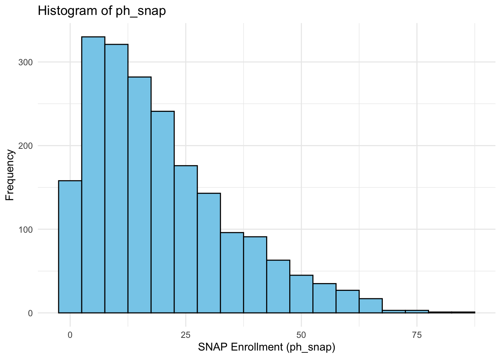
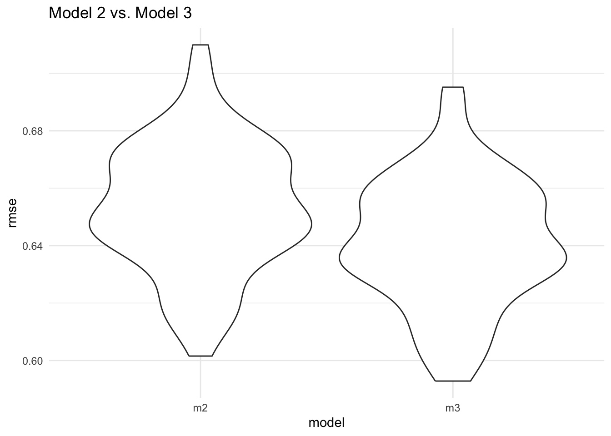
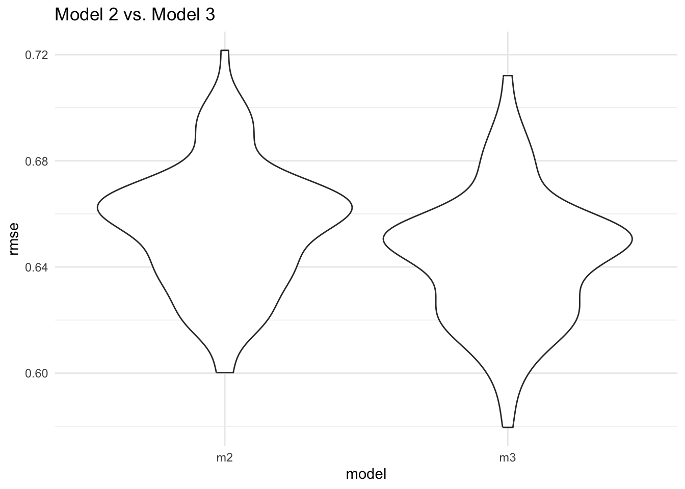
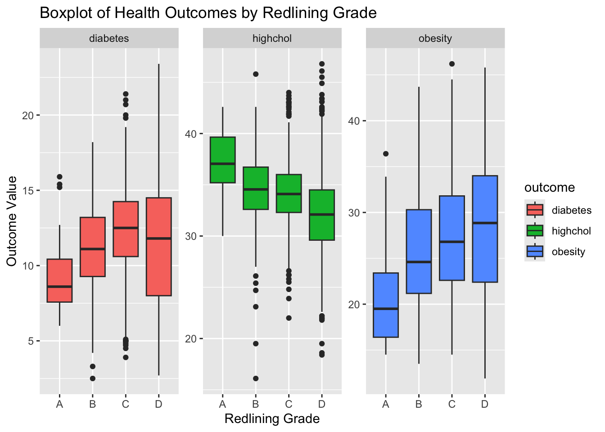

final_analysis |>
group_by(red_grade)|>
summarise(count = n())|>
knitr::kable()| red_grade | count |
|---|---|
| A | 36 |
| B | 352 |
| C | 1003 |
| D | 642 |
The number of A-grade census tract is the smallest (n=36) while the number of C-grade census tract is the biggest(n=1003).
redlining_grades=
final_analysis |>
group_by(red_grade) |>
summarise(
avg_snap = mean(ph_snap, na.rm = TRUE),
sd_snap = sd(ph_snap, na.rm = TRUE),
avg_elderly = mean(ph_elderly,na.rm=TRUE),
sd_elderly = sd(ph_elderly, na.rm = TRUE),
avg_child = mean(ph_with_children, na.rm = TRUE),
sd_child = sd(ph_with_children, na.rm = TRUE),
avg_poverty = mean(ph_below_poverty, na.rm = TRUE),
sd_poverty = sd(ph_below_poverty, na.rm = TRUE),
avg_disability = mean(ph_disability, na.rm = TRUE),
sd_disability = sd(ph_disability, na.rm = TRUE),
avg_white = mean(ph_white, na.rm = TRUE),
sd_white = sd(ph_white, na.rm = TRUE),
avg_black = mean(ph_black, na.rm = TRUE),
sd_black = sd(ph_black, na.rm = TRUE),
avg_asian = mean(ph_asian, na.rm = TRUE),
sd_asian = sd(ph_asian, na.rm = TRUE),
avg_otherrace = mean(ph_other_race, na.rm = TRUE),
sd_otherrace = sd(ph_other_race, na.rm = TRUE),
avg_hispanic = mean(ph_hispanic, na.rm = TRUE),
sd_hispanic = sd(ph_hispanic, na.rm = TRUE),
avg_nowork = mean(ph_no_work, na.rm = TRUE),
sd_nowork = sd(ph_no_work, na.rm = TRUE),
avg_1work = mean(ph_1_work, na.rm = TRUE),
sd_1work = sd(ph_1_work, na.rm = TRUE),
avg_2work = mean(ph_2_work, na.rm = TRUE),
sd_2work = sd(ph_2_work, na.rm = TRUE),
avg_obesity = mean(obesity, na.rm = TRUE),
sd_obesity = sd(obesity, na.rm = TRUE),
avg_highchol = mean(highchol, na.rm = TRUE),
sd_highchol = sd(highchol, na.rm = TRUE),
avg_diabetes = mean(diabetes, na.rm = TRUE),
sd_diabetes = sd(diabetes, na.rm = TRUE)
)|> pivot_longer(
cols = -red_grade,
names_to = c("stat", "variable"),
names_sep = "_"
)|>
pivot_wider(
names_from = c(red_grade, stat),
values_from = value,
names_glue = "{red_grade}_{stat}"
)
anova = function(dataset, outcomes, predictor) {
results = list()
for (outcome in outcomes) {
formula = as.formula(paste(outcome, "~", factor(predictor)))
model= aov(
formula,
data = dataset
)
results[[outcome]] = broom::tidy(model)
}
combined_results = bind_rows(results, .id = "outcome")
return(combined_results)
}
outcomes = c("ph_snap","ph_with_children", "ph_elderly","ph_below_poverty", "ph_disability", "ph_white", "ph_black", "ph_asian", "ph_other_race", "ph_hispanic", "ph_no_work","ph_1_work", "ph_2_work", "obesity", "highchol", "diabetes")
baseline_char =
anova(final_analysis, outcomes, "red_grade")|>
filter(term == "red_grade")|>
rename(variable = outcome)|>
mutate(variable = case_when(
variable == "ph_snap" ~ "snap",
variable == "ph_with_children" ~ "child",
variable == "ph_elderly" ~ "elderly",
variable == "ph_below_poverty" ~ "poverty",
variable == "ph_no_work" ~ "nowork",
variable == "ph_white" ~ "white",
variable == "ph_black" ~ "black",
variable == "ph_asian" ~ "asian",
variable == "ph_other_race" ~ "otherrace",
variable == "ph_disability" ~ "disability",
variable == "ph_hispanic" ~ "hispanic",
TRUE ~ variable
))|>
inner_join(redlining_grades, by="variable")|>
select(variable, A_avg:D_sd, p.value)
baseline_char|>
filter(!variable %in% c("obesity","diabetes","highchol"))|>
knitr::kable(digits = 3)| variable | A_avg | A_sd | B_avg | B_sd | C_avg | C_sd | D_avg | D_sd | p.value |
|---|---|---|---|---|---|---|---|---|---|
| snap | 5.722 | 6.947 | 17.249 | 13.613 | 18.625 | 13.397 | 23.695 | 17.848 | 0.000 |
| child | 20.572 | 7.435 | 28.063 | 9.465 | 31.655 | 10.694 | 28.920 | 13.282 | 0.000 |
| elderly | 52.581 | 12.823 | 44.947 | 11.384 | 44.007 | 11.823 | 35.448 | 13.569 | 0.000 |
| poverty | 7.581 | 6.033 | 14.181 | 8.666 | 15.557 | 10.408 | 20.559 | 13.115 | 0.000 |
| disability | 19.556 | 8.196 | 23.135 | 8.850 | 24.373 | 9.719 | 23.863 | 11.446 | 0.013 |
| white | 74.506 | 23.050 | 46.186 | 28.672 | 36.943 | 27.730 | 36.874 | 28.197 | 0.000 |
| black | 6.483 | 14.056 | 23.182 | 28.434 | 22.462 | 27.847 | 29.809 | 27.748 | 0.000 |
| asian | 8.447 | 7.092 | 11.822 | 13.307 | 16.679 | 18.267 | 9.954 | 13.308 | 0.000 |
| otherrace | 10.564 | 9.858 | 18.810 | 17.893 | 23.915 | 16.646 | 23.364 | 17.182 | 0.000 |
| hispanic | 12.722 | 12.028 | 21.387 | 22.911 | 27.207 | 21.051 | 28.420 | 23.075 | 0.000 |
| nowork | 17.447 | 7.599 | 12.464 | 7.185 | 12.221 | 7.232 | 13.998 | 10.118 | 0.000 |
We computed the average and standard deviation of the different socio-demographic factors across the redlining grade groups. ANOVA was utilized to compare the mean across different census tract grades (A, B, C and D). The percentage of household enrolled in snap/ food stamp program at the census tract level was significantly different among groups with different redlining grades at 5% significance level. A-grade census tracts had the lowest average percentage of SNAP enrollment (5.72%, sd: 6.95%) and the average percentage of SNAP enrollment is the highest in D-grade census tracts (23.70, sd: 17.85). In addition, the groups with different redlining grades reported significant different for the average percentage regarding households with children smaller than 18 years, households with elderly grater than 60 years, households below the poverty line, households with people with disability, race and ethnicity, and employment status.
q1_vs_q4 =
final_analysis|>
filter(red_grade %in%c("A","D"))|>
mutate()
q1q4_desc =
q1_vs_q4|>
group_by(red_grade)|>
summarise(
ph_snap = mean(ph_snap),
ph_with_children = mean(ph_with_children),
ph_elderly = mean(ph_elderly),
ph_below_poverty = mean(ph_below_poverty),
ph_disability = mean(ph_disability),
minority = mean(minority),
ph_no_work = mean(ph_no_work),
obesity = mean(obesity),
highchol = mean(highchol),
diabetes = mean(diabetes)
)|>
pivot_longer(cols = -red_grade, names_to = "variable", values_to = "value")|>
pivot_wider(names_from = red_grade, names_prefix = "grade_", values_from = value)|>
mutate(
mean_diff = grade_D - grade_A,
)|>
rename(outcome = variable)uni_reg = function(dataset, outcomes, predictor) {
results = list()
for (outcome in outcomes) {
formula = as.formula(paste(outcome, "~", predictor))
model= t.test(
formula,
data = dataset
)
results[[outcome]] = broom::tidy(model)
}
combined_results = bind_rows(results, .id = "outcome")
return(combined_results)
}
outcomes = c("ph_snap","ph_with_children", "ph_elderly","ph_below_poverty", "ph_disability", "ph_white", "ph_black", "ph_asian", "ph_no_work", "obesity", "highchol", "diabetes")
uni_reg(q1_vs_q4, outcomes, "red_grade")|>
inner_join(q1q4_desc, by="outcome")|>
select(outcome, grade_A, grade_D, mean_diff, p.value)|>
knitr::kable(digits = 3)| outcome | grade_A | grade_D | mean_diff | p.value |
|---|---|---|---|---|
| ph_snap | 5.722 | 23.695 | 17.972 | 0.000 |
| ph_with_children | 20.572 | 28.920 | 8.348 | 0.000 |
| ph_elderly | 52.581 | 35.448 | -17.133 | 0.000 |
| ph_below_poverty | 7.581 | 20.559 | 12.978 | 0.000 |
| ph_disability | 19.556 | 23.863 | 4.307 | 0.005 |
| ph_no_work | 17.447 | 13.998 | -3.449 | 0.013 |
| obesity | 20.736 | 28.710 | 7.974 | 0.000 |
| highchol | 37.275 | 32.286 | -4.989 | 0.000 |
| diabetes | 9.247 | 11.584 | 2.337 | 0.000 |
Following the ANOVA test results, we wondered whether there is any significant difference across the least-redlined (A-grade) and most-redlined (D-grade) census tracts regarding snap enrollment, socio-demographic factors, and health outcomes. Based on the t-test outcome, D-grade census tracts had significantly higher average percentage of households enrolled for SNAP, average percentage of households with children, average percentage of households below the poverty line, average percentage of households with peoplw with diability, percentage of household with minority race compared to A-grade census tracts. Additionally, A-grade census tract had significantly higher average percentage of households with elderly, average percentage of households with no worker.
Regarding the health outcomes, the average prevalence of obesity is 7.97% higher, and the average prevalence for diabetes is 2.34% higher in the D-grade census tracts compared to A-grade census tracts. The average prevalence of high cholesterol level is 4.99% higher in the A-grade census tracts compared to D-grade census tracts. All of the difference in the average prevalence is statistically signficant.
Based on the results for the baseline characteristics analysis, we computed a linear regression model to explore the association between redlining grades and precentage of households enrolled in SNAP.
# univariate analysis
lm(ph_snap~red_grade,final_analysis)|>
broom::tidy()|>
knitr::kable(digits= 3)| term | estimate | std.error | statistic | p.value |
|---|---|---|---|---|
| (Intercept) | 5.722 | 2.484 | 2.303 | 0.021 |
| red_gradeB | 11.527 | 2.608 | 4.420 | 0.000 |
| red_gradeC | 12.903 | 2.528 | 5.103 | 0.000 |
| red_gradeD | 17.972 | 2.553 | 7.040 | 0.000 |
Based on the univariate model, we found the percentage of household enrolled in SNAP was 17.97%, 12.90% and 11.53% higher respectively in the D-grade, C-grade and B-grade census tracts compared to A-grade census tracts (all p-value <0.001).
## multivariate model 1
red_snap_m1 = lm(ph_snap~red_grade+minority+ph_elderly+ph_disability+ph_no_work,final_analysis)
tidy_model = broom::tidy(red_snap_m1)
ci = confint(red_snap_m1)
tidy_model|>
mutate(
CI_Lower = ci[, 1],
CI_Upper = ci[, 2],
)|>
select(term, estimate, p.value, CI_Lower, CI_Upper)|>
knitr::kable(digits = 3, caption = "Model 1 Estimates with 95% Confidence Intervals")| term | estimate | p.value | CI_Lower | CI_Upper |
|---|---|---|---|---|
| (Intercept) | -1.061 | 0.613 | -5.174 | 3.052 |
| red_gradeB | 3.315 | 0.087 | -0.476 | 7.106 |
| red_gradeC | 2.034 | 0.283 | -1.677 | 5.745 |
| red_gradeD | 4.044 | 0.037 | 0.249 | 7.839 |
| minority | 0.162 | 0.000 | 0.144 | 0.180 |
| ph_elderly | -0.334 | 0.000 | -0.376 | -0.292 |
| ph_disability | 0.749 | 0.000 | 0.693 | 0.804 |
| ph_no_work | 0.320 | 0.000 | 0.259 | 0.382 |
## histogram for snap enrollment
ggplot(final_analysis, aes(x = ph_snap)) +
geom_histogram(binwidth = 5, fill = "skyblue", color = "black") +
labs(
title = "Histogram of ph_snap",
x = "SNAP Enrollment (ph_snap)",
y = "Frequency"
) +
theme_minimal()
## multivariate model 2
red_snap_m2 =
final_analysis|>
lm(log(ph_snap+1)~red_grade+minority+ph_elderly+ph_disability+ph_no_work, data=_)
tidy_model = broom::tidy(red_snap_m2)
ci = confint(red_snap_m2)
tidy_model|>
mutate(
Back_Transformed_Estimate = exp(estimate),
CI_Lower = exp(ci[, 1]),
CI_Upper = exp(ci[, 2]),
p.value = ifelse(p.value<0.001, "<0.001", p.value)
)|>
select(term, estimate, p.value, Back_Transformed_Estimate, CI_Lower, CI_Upper)|>
knitr::kable(digits = 3, caption = "Model 2 Coefficients with Back-Transformed Estimates and 95% Confidence Intervals")| term | estimate | p.value | Back_Transformed_Estimate | CI_Lower | CI_Upper |
|---|---|---|---|---|---|
| (Intercept) | 0.963 | <0.001 | 2.619 | 2.045 | 3.354 |
| red_gradeB | 0.574 | <0.001 | 1.776 | 1.414 | 2.231 |
| red_gradeC | 0.560 | <0.001 | 1.750 | 1.400 | 2.188 |
| red_gradeD | 0.601 | <0.001 | 1.824 | 1.452 | 2.292 |
| minority | 0.012 | <0.001 | 1.012 | 1.011 | 1.013 |
| ph_elderly | -0.014 | <0.001 | 0.987 | 0.984 | 0.989 |
| ph_disability | 0.037 | <0.001 | 1.038 | 1.035 | 1.041 |
| ph_no_work | 0.009 | <0.001 | 1.009 | 1.005 | 1.013 |
##multivariate model 3
red_snap_m3 = lm(log(ph_snap+1)~red_grade+ph_white+ph_black+ph_asian+ph_elderly+ph_disability+ph_no_work,final_analysis)
tidy_model = broom::tidy(red_snap_m3)
ci = confint(red_snap_m3)
tidy_model|>
mutate(
Back_Transformed_Estimate = exp(estimate),
CI_Lower = exp(ci[, 1]),
CI_Upper = exp(ci[, 2]),
p.value = ifelse(p.value<0.001, "<0.001", p.value)
)|>
select(term, estimate, p.value, Back_Transformed_Estimate, CI_Lower, CI_Upper)|>
knitr::kable(digits = 3, caption = "Model 3 Coefficients with Back-Transformed Estimates and 95% Confidence Intervals")| term | estimate | p.value | Back_Transformed_Estimate | CI_Lower | CI_Upper |
|---|---|---|---|---|---|
| (Intercept) | 2.720 | <0.001 | 15.182 | 11.386 | 20.242 |
| red_gradeB | 0.615 | <0.001 | 1.849 | 1.478 | 2.314 |
| red_gradeC | 0.586 | <0.001 | 1.798 | 1.443 | 2.240 |
| red_gradeD | 0.665 | <0.001 | 1.944 | 1.553 | 2.434 |
| ph_white | -0.019 | <0.001 | 0.981 | 0.979 | 0.983 |
| ph_black | -0.009 | <0.001 | 0.991 | 0.989 | 0.993 |
| ph_asian | -0.010 | <0.001 | 0.990 | 0.988 | 0.993 |
| ph_elderly | -0.009 | <0.001 | 0.991 | 0.988 | 0.994 |
| ph_disability | 0.032 | <0.001 | 1.032 | 1.029 | 1.036 |
| ph_no_work | 0.009 | <0.001 | 1.009 | 1.005 | 1.013 |
cv_df =
crossv_mc(final_analysis, 100)cv_df =
cv_df|>
mutate(model_1 = map(train, \(df)
lm(ph_snap~red_grade+minority+ph_elderly+ph_disability+ph_no_work,
data=df)),
model_2 = map(train, \(df)
lm(log(ph_snap+1)~red_grade+minority+ph_elderly+ph_disability
+ph_no_work,data=df)),
model_3 = map(train, \(df)
lm(log(ph_snap+1)~red_grade+ph_white+ph_black+ph_asian+ph_elderly
+ph_disability+ph_no_work, data=df))
)|>
mutate(
rmse_m1 = map2_dbl(model_1, test, \(mod, df) rmse(model = mod, data = df)),
rmse_m2 = map2_dbl(model_2, test, \(mod, df) rmse(model = mod, data = df)),
rmse_m3 = map2_dbl(model_3, test, \(mod, df) rmse(model = mod, data = df))
)cv_df |>
select(starts_with("rmse")) |>
pivot_longer(
everything(),
names_to = "model",
values_to = "rmse",
names_prefix = "rmse_") |>
mutate(model = fct_inorder(model)) |>
ggplot(aes(x = model, y = rmse)) + geom_violin()+
labs(title = "Model 1 vs. Model 2 & 3")+
theme_minimal()
cv_df |>
select(starts_with("rmse")) |>
pivot_longer(
everything(),
names_to = "model",
values_to = "rmse",
names_prefix = "rmse_") |>
mutate(model = fct_inorder(model)) |>
filter(model == "m2" | model== "m3")|>
ggplot(aes(x = model, y = rmse)) + geom_violin()+
labs(title = "Model 2 vs. Model 3")+
theme_minimal()
Based on the rootmean square models, model 2 and 3 perform signficantly better than model 1, while model 3 performs slightly better than model 3.
baseline_char|>
filter(variable %in% c("obesity","diabetes","highchol"))|>
mutate(p.value = ifelse(p.value<0.001, "<0.001", p.value)) |>
knitr::kable(digits = 3)| variable | A_avg | A_sd | B_avg | B_sd | C_avg | C_sd | D_avg | D_sd | p.value |
|---|---|---|---|---|---|---|---|---|---|
| obesity | 20.736 | 5.612 | 25.923 | 6.185 | 27.506 | 6.374 | 28.710 | 7.607 | <0.001 |
| highchol | 37.275 | 3.238 | 34.500 | 3.295 | 34.142 | 3.052 | 32.286 | 4.195 | <0.001 |
| diabetes | 9.247 | 2.476 | 11.114 | 2.909 | 12.355 | 2.923 | 11.584 | 4.417 | <0.001 |
final_analysis |>
select(red_grade, obesity, diabetes, highchol) |>
pivot_longer(cols = c(obesity, diabetes, highchol),
names_to = "outcome",
values_to = "value") |>
ggplot(aes(x = red_grade, y = value, fill = outcome)) +
geom_boxplot() +
facet_wrap(~ outcome, scales = "free_y") +
labs(title = "Boxplot of Health Outcomes by Redlining Grade",
x = "Redlining Grade",
y = "Outcome Value")
obesity_model = lm(obesity ~ red_grade, data = final_analysis)
obesity_model|>
broom::tidy()|>
mutate(p.value = ifelse(p.value<0.001, "<0.001", p.value)) |>
knitr::kable(digits = 3)| term | estimate | std.error | statistic | p.value |
|---|---|---|---|---|
| (Intercept) | 20.736 | 1.124 | 18.444 | <0.001 |
| red_gradeB | 5.187 | 1.180 | 4.394 | <0.001 |
| red_gradeC | 6.770 | 1.144 | 5.917 | <0.001 |
| red_gradeD | 7.974 | 1.155 | 6.901 | <0.001 |
diabetes_model = lm(diabetes ~ red_grade, data = final_analysis)
diabetes_model |>
broom::tidy()|>
knitr::kable(digits = 3)| term | estimate | std.error | statistic | p.value |
|---|---|---|---|---|
| (Intercept) | 9.247 | 0.576 | 16.048 | 0.000 |
| red_gradeB | 1.866 | 0.605 | 3.085 | 0.002 |
| red_gradeC | 3.108 | 0.586 | 5.299 | 0.000 |
| red_gradeD | 2.337 | 0.592 | 3.947 | 0.000 |
chol_model = lm(highchol ~ red_grade, data = final_analysis)
chol_model |>
broom::tidy()|>
mutate(p.value = ifelse(p.value<0.001, "<0.001", p.value)) |>
knitr::kable(digits = 3)| term | estimate | std.error | statistic | p.value |
|---|---|---|---|---|
| (Intercept) | 37.275 | 0.583 | 63.977 | <0.001 |
| red_gradeB | -2.775 | 0.612 | -4.536 | <0.001 |
| red_gradeC | -3.133 | 0.593 | -5.284 | <0.001 |
| red_gradeD | -4.989 | 0.599 | -8.332 | <0.001 |